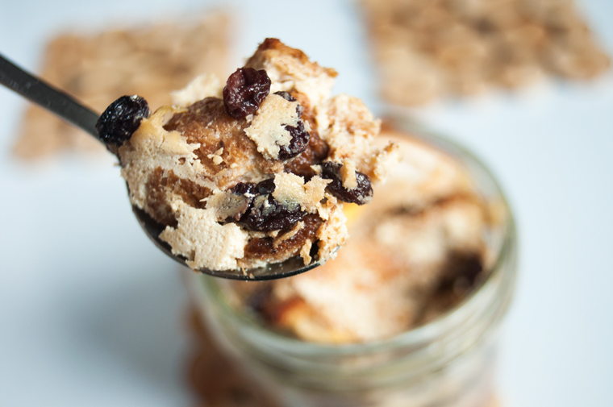

mason jar bread pudding
1 serving — 30 minutes

Bread pudding was one of my favourite desserts when I was a kid. We would usually have some after the holidays, thanks to my aunt's crust-free sandwiches! She would usually just give the bag of crusts to my mom, which she in turn, used to make bread pudding.

I asked my mom for her personal bread pudding recipe, but she told me that it was best to just watch her do it. There aren't really any specific measurements, she just makes it from memory. That's the case with most of her recipes, most of them have never been written down.
When she makes bread pudding, she makes a basin-full of it. My dad never has trouble going through all of it.
As much as i'd like to make a bucketload of bread pudding at home, me and Devine would NEVER get through the whole thing. I don't like eating the same thing for a week, so I adapted my mom's bread pudding into a single-serving one. The mason jar is a wide-mouthed 1/2 pint jar.
If ever you have some leftover crusts (even just a few) you can totally make this. It's a quick and simple dessert, with a taste of home.
 soft tofu 90 g
soft tofu 90 g soy milk 80 ml
soy milk 80 ml vanilla extract 1.25 ml
vanilla extract 1.25 ml bread crusts 20 g, packed
bread crusts 20 g, packed dried raisins 15 ml
dried raisins 15 ml apple 1, small
apple 1, small brown sugar 5 ml
brown sugar 5 ml cinnamon 1.25 ml
cinnamon 1.25 ml maple syrup 15 ml
maple syrup 15 ml
bread pudding
- Preheat oven at 180°C (350°F)
- Combine 90g (~1/4 cup) of soft tofu, 80 ml (1/3 cup) of soy milk and 1.25 ml (1/4 tsp) of vanilla extract. Blend until smooth.
- Take a 250 ml (1/2 pint) wide-mouthed mason jar. Fill it up halfway with bread crusts. Cut 1 apple into two, then slice the half into tiny cubes, add to the jar. Then add the dried raisins. Pour liquid to cover until it's level with the bread crusts
- Cover with more bread crusts and dried raisins. Pour more liquid onto it, until the jar is about 3/4 full.
- Sprinkle 5 ml (1 tsp) of brown sugar on top, decorate with apple slices (use the other half of the apple), add 1.25 ml (1/4 tsp), cinnamon and 15 ml (1 tbsp) of maple syrup overtop.
- Cook for 20-25 minutes, or until top is browned. Let cool, drizzle with some maple syrup and enjoy!